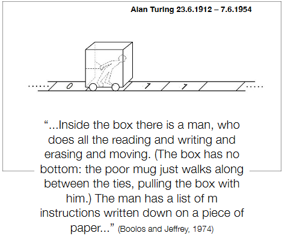
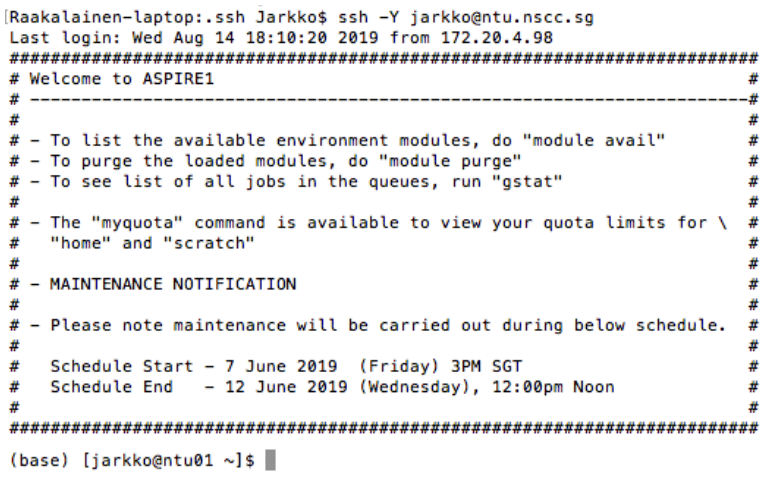
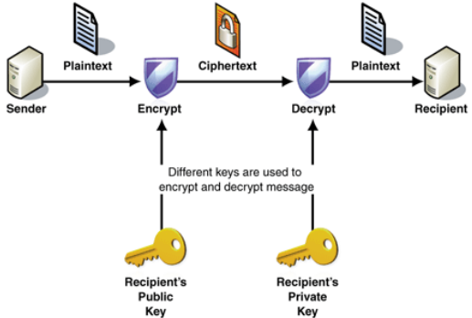
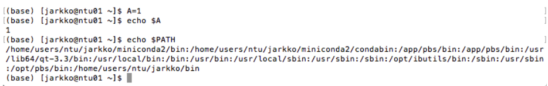
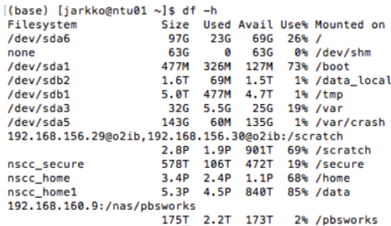
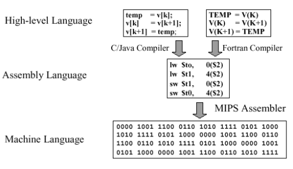

1 Introduction to Linux and the Command Line (untested)
This week’s lecture aims to cover the following topics:
- Basics of using Linux and Unix systems.
- Understand Unix design principles and why they are good for bioinformatics and software development (generally speaking).
Like the title of chapter implies, the information presented in this chapter will not be tested.
1.1 A Brief Introduction to Computers
1.1.1 Turing’s Machine
A universal machine is a machine that can solve any sequence of problems that can be solved using a computer. An machine is called Turing complete if it can act like a Turing machine: a machine that is capable of following certain rules to solve problems in a stepwise fashion. Many of today’s programming languages are Turing-complete.
1.1.2 Machine Language
Machine language is the only thing that computers understand.
The central processing unit (i.e., CPU) is the so-called “brain” of the computer and uses bits to work. When one talks about a “64-bit: CPU, it means the groups of bits are 64 in length.
Computers understand instructions in a language made of bits, but it’s really tough for people to read and figure out what’s going on. So, to make it easier, an operating system (i.e., OS) is necessary. This is like a middleman that helps us talk to the computer in a way we can understand better.
1.2 Unix OS
The Uniplexed nformation and Computer Service (i.e., Unix for short) OS - often pronounced as “eunuchs” was created at Bell Laboratories in the early 1970s to help make software.
In 1969, it started as a bunch of instructions written in a language computers understand, and it was made by Ken Thompson. Then, between 1972 and 1974, Ken Thompson and Dennis Ritchie made a new version using a language called “C”. Back then, anyone could look at and use the code for free.
But in the early 1980s, the company AT&T decided to keep the code secret and started selling licenses for using Unix. It even led to different versions of Unix being made by different companies.
Interestingly, Mac OS X, the operating system used in Mac computers, is a type of Unix too!
1.2.1 Unix Philosophy
The design idea behind Unix programs can be summarized into three bullet points:
- Write programs that are really good at doing one thing.
- Write programs that can team up and help one another out.
- Write programs that are good at dealing with text, because text is one way that everyone can talk to one another.
The command line is also the key to using a Linux system.
There are also nine “paramount precepts” as Mike Gancarz summarizes:
- Remember, small things are nice.
- Each program should be awesome at doing just one thing.
- Build a simple version first to test.
- It’s better if your stuff works on lots of different computers.
- Keep your information in plain text files.
- Use existing software to help you do more.
- Use special scripts to make things even better and work on different computers.
- Don’t trap people in your program; let them do what they want.
- Make each program a tool to help with tasks.
1.3 Linux OS
“I’m doing a (free) operating system (just a hobby, won’t be big and professional like gnu) for 386(486) AT clones.”
– Linus Torvalds, August 25th, 1991.
Linux is like a free operating system that works with Unix (i.e., older systems). When Unix started costing money in the 1980s, people wanted a free option. Linux is like the core part of a computer system (i.e., the kernel), connecting the software to the hardware and different programs to each other. To make it a complete system, it’s joined with other software, and this whole package is called a distribution.
1.3.1 Why Use Linux?
It’s trustworthy and stays steady with fewer problems. There’s hardly any viruses to worry about. It’s quick because it’s built really well. Plus, Linux is free - the software is open, which means it works well with other things and gets better quickly.
If you want to make your own programs, it’s easy with Linux because there are free tools and helpful information. One can also change the Linux OS code if they want to.
1.3.1.1 Why Use Linux for Bioinformatics Data Analysis?
Linux has lots of little tools made by many people that can each do a small part of the work. One can mix these tools together to create pipelines that do big tasks.
It’s also a fantastic platform for open-source software, which means one can use many programming languages and libraries without paying.
But, keep in mind that using Linux might not be as easy as some other options. one’ll have to type commands on a special line, and it only does exactly what one tells it to, not what you might want it to do automatically.
1.4 Bash and the Command Line
1.4.1 What is Bash?
When one uses a computer with Unix, they can talk to it through something called a terminal emulator. This is a “window” to type things.
The terminal helps one use a special interface called a shell, which is like a way to talk to the computer by typing commands. There are different types of shells, but “bash” is the most common. It’s been around since 1989 and is used in systems like Linux and Apple’s OS X.
1.4.2 The Command Line
The command line is a place where one types in what they want the computer to do. It’s not as easy as clicking on icons like in a Graphical User Interface (i.e., GUI), but it has its benefits.

It’s a bit harder for beginners because they need to learn the right words (commands), but it’s faster and lets them do more. One can write down everything they do in a text file, which can be helpful. It’s also great for working with text and making the computer do things over and over automatically.
1.4.2.1 Example: Connecting to a Remote Server Using an Encrypted SSH Protocol
Secure shell (i.e., SSH) and secure copy (i.e., SCP) are like special ways to talk to a computer securely. They were made by someone named Tatu Ylönen in 1995.

Imagine one is sending secret messages over an unsecure network. SSH makes a safe pathway using a special key that has a lot of numbers. This key comes in two parts: the public key, which can be shared, and the private key, which keeps things secret.
1.4.3 Basic Bash Operations
1.4.3.1 Fundamental Operations
Some basic commands include:
ls- this lists all files and folders in the current working directory.cd- this changes the working directory.cp- this makes a copy of a file.
Commands also have something called flags that modify the output. For instance, ls -la lists all files (including the hidden ones) in the current working directory in long form.
Commands also take in arguments to complete the command - for instance, cp file1 ../folder1.
The man command displays helpful information about a command - for instance, man ls will list information about the ls command.
1.4.3.2 Bash Variables
In bash, one can use variables like containers for information.
For example, one can say A=1 to put the number 1 in a variable called A. When one wants to use that number, they can add a “$” before the variable’s name, like “$A”.

To show the value of a variable on the screen, they can use echo and write echo $A. Some variables are made by the computer, like PATH, which tells the computer where to look for programs. One can also add their own places to look by changing PATH.
1.4.3.3 Redirects
When you one runs a regular Unix command, it shows words on the screen. However, one can make those words go somewhere else too.
For example, if they want to list files and save the list in a file, they can write ls > listfile.txt. If they want to add more files to that list, they can write ls >> listfile.txt.
They can also make the words go to another command by using a pipe, like ls | grep listfile.
You can do this as many times as you need.
1.4.4 Linux File System
In Unix, there aren’t “hard drives” like we usually think of them. Instead, there are directories. Think of these as special folders. ’

When one connects to a hard drive, it’s divided into pieces, and each piece is attached to a directory. So, the directory shows what’s in that piece of the hard drive.
When one uses the “mount” command, it links a special part of the hard drive or even something from another computer to a directory. This way, the directory shows the stuff from that hard drive or computer.
1.4.5 Permission Management in Linux
In Unix, there are three groups for who can do what with files. The first is the user who owns the file - they can keep things private.
Then there’s a bigger group of users who can share files. Finally, there’s others, which means everyone else. There are three types of things you can do with files:
- read (r)
- write (w)
- execute (x)
These permissions are like rules for each group saying what they can and can’t do with the files.
1.4.6 Bash as a Turing-Complete Language
The bash shell isn’t just about doing things; it’s like a language for telling the computer what to do. The programs you make using the Bash language are called shell scripts. These scripts are like lists of instructions that the computer understands.
They’re translated and done by the computer right away, which makes Bash an “interpreted” language. Shell scripts are really good for quickly working with text and doing powerful things. For example, at NSCC, they have a system where you put your special list (script) in a line and the computer runs it when it’s ready.
1.4.7 Useful Pointers When Using Linux
Prof. Jarkko also lists some tips when using Linux to work on tasks:
- You can’t easily get back deleted files.
- Small and capital letters matter in commands and file names.
- Some characters like #;& ” / ’ : < > | * ? $ ( ) { } [ ] and space do special things.
- It’s safest to use only letters, numbers, _ (underscore), and . (dot) in file names.
- If you use those special characters, put quotes around the name.
- File names can be anything, like a
mytext.txtfile might not be text, but it’s good to follow conventions!
1.5 How Does Programming Work?

Programming languages, like C/C++ and Visual Basic, or Python, R, and Matlab, use special tools to change the commands one writes into instructions the computer understands. These tools are like translators. Some languages use a compiler, which does the translation all at once, while others use an interpreter, which does it step by step.
1.5.1 Compilers vs. Interpreters
There are two main ways to change one’s programming commands into computer language:
Compiler:
It takes your list of commands (code) and changes it all into computer language at once. This gives one a file that they can run as a program. One can use it from the command line or through a nice interface.
Interpreter:
It changes your commands into computer language one by one as they use them. They can give commands directly or run a list of them from a file called a script. This is like a set of instructions in a text file.
1.5.2 Low versus High Level Languages
Low-level programming languages are like really simple tools for computers. They only know how to do basic things, and they’re kind of like talking to the computer in its own language. They can work directly with memory and other computer parts. This makes them run really fast, but when one wants to do complex things, they have to write a lot of instructions, and it can be hard to find mistakes in their code.
High-level programming languages are like using simpler words for computers. They’re farther away from the computer’s language, so they’re easier for people to understand. They work kind of like how humans talk, and they’re good for organizing things like objects. When one uses them, they can write less code because they can do complicated stuff in a simpler way. That’s why many people like using them for most things they create on computers.